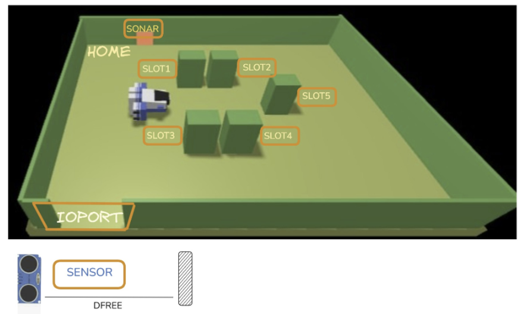

GOAL: - Analizzare e sviluppare i componenti cargoservice e cargorobot e le loro logiche

In the picture above: • The slots1-4 depict the hold areas reserved to store one container each, • The slot5 depicts an area, where the cargorobot must temporarily store a container, before to place it in one of the slots1-4. During temporary storage, a 'marker' device labels the container with an identification barcode and signals when this marking activity is completed. The company asks us to build service named cargoservice that should work as follows. The cargoservice is able to receive a request to load a container sent by some customer by using the pushbutton of the IOPort. • It sends the answer retrylater, if the IOPort is currently occupied by a container or if the system is Out of service • It rejects the request when the hold is already full, i.e. the slots1-4 are already occupied. • Otherwise, it considers the system as engaged, detects a free slot and returns as answer the name of such a reserved slot. While engaged, the system must blink a Led. When the request to load is accepted, the customer must move the container in the sensor area within prefixed amount of time (e.g. 30 secs), otherwise the systems becomes disengaged. Then, the cargoservice uses the cargorobot to move the container from the IOPort to the slot5 (for marking the container) and then to the reserved slot. The service must also show on the display on the IOPort: • the current state of the hold • the message 'Service working', when it is all is going well • the message 'Out of service' if the sonar sensor measures a distance D > DFREE for at least 3 secs (perhaps a failure of the sonar).
A partire da quanto svolto nello Sprint0, ci concentriamo sui seguenti requisiti: • Studio dei componenti non-attivi del sistema e loro integrazione. • Studio del macro-componente cargoservice e della logica di business relativa alle richieste di movimentazione e allocazione dei container. • Studio del macro-componente cargorobot; il quale realizza le operazioni relative al DDR.
Componenti non-attivi e introduzione di cargohold:
• Per rappresentare in modo strutturato lo stato della hold e dei suoi componenti, si introducono apposite classi POJO,
che consentono di modellare le informazioni relative alla configurazione spaziale della stiva e allo stato degli slot.
• Una volta definita la rappresentazione della hold e dei relativi componenti, è necessario individuare quale entità del sistema debba essere
responsabile della gestione e della persistenza del suo stato durante l'esecuzione. Tale responsabilità non dovrebbe essere affidata a cargoservice,
poiché un suo eventuale riavvio a runtime comporterebbe la nuova istanziazione degli oggetti utilizzati per rappresentare lo stato della stiva,
con il rischio di perdere le informazioni accumulate durante l'esecuzione. Per evitare questa dipendenza e garantire una maggiore separazione delle responsabilità,
si sceglie di introdurre un nuovo microservizio proattivo, dedicato alla gestione e al mantenimento dello stato della hold e dei suoi componenti: cargohold.
Questa entità avrà il compito di monitorare e aggiornare lo stato del sistema, rendendolo disponibile agli altri servizi attraverso opportune interfacce di comunicazione.
In questo modo, cargoservice potrà concentrarsi sulle proprie responsabilità applicative, delegando la gestione dello stato a un componente dedicato.
Relazione cargorobot ↔ robotsmart26: • Sulla base dei requisiti e delle indicazioni fornite dal committente, si stabilisce che i due componenti software robotsmart26 e cargorobot siano da considerarsi equivalenti e facciano riferimento alla medesima entità all'interno dell'architettura del sistema. Tale scelta consente di uniformare la terminologia utilizzata nella documentazione, evitando ambiguità nell'identificazione del componente e nella descrizione delle sue responsabilità. Di conseguenza, da questo punto in avanti, i termini robotsmart26 e cargorobot saranno utilizzati in modo intercambiabile, senza che ciò implichi l'esistenza di due componenti software distinti. • Si osserva che robotsmart26 non gestisce lo stato degli slot, ma come già anticipato, sarà compito cargohold.
Definizione dei QActor e dei contesti:
Di seguito definiamo gli attori in gioco modellando un primo sistema:
System cargocompany
Context ctxcargocompany ip [ host="localhost" port=8040]
Context ctxrobotsmart ip [host="127.0.0.1" port=8050 ]
//...
ExternalQActor robotsmart context ctxrobotsmart
//...
QActor cargohold context ctxcargocompany
//...
QActor cargoservice context ctxcargocompany
Dettaglio messaggi: • cargohold comunica tramite la seguente sintassi: • cargohold ↔ cargoserviceRequest requestSlot : requestSlot(NOARGS) Reply slotReserved : slotReserved(ANSWER) for requestSlot Reply slotFailed : slotFailed(REASON) for requestSlot Request setSlot : setSlot(SLOTID, STATE) Reply setSlotChanged : setSlotChanged(NOARGS) for setSlot Reply setSlotFailed : setSlotFailed(REASON) for setSlot Request requestPosition : requestPosition(SLOTID) Reply slotPosition : slotPosition(X, Y) for requestPosition Reply positionFailed : positionFailed(REASON) for requestPositionRichieste attese: - setSlot: slotId, stato "free", "reserved" o "occupied" - requestPosition: slotId Risposte attese: - slotReserved: slotId riservato - slotPosition: coordinate X, Y - slotFailed: motivazione - setSlotFailed: motivazione - positionFailed: motivazione • cargoservice accetta richieste di carico tramite la seguente sintassi: • cargoservice ↔ webguiRequest requestToLoad : requestToLoad(NOARGS) Reply loadAccepted : loadAccepted(ANSWER) for requestToLoad Reply loadRejected : loadRejected(ANSWER) for requestToLoad Reply loadRetryLater : loadRetryLater(ANSWER) for requestToLoadRisposte attese: - loadAccepted: slotId riservato - loadRejected: "rejected" - loadRetryLater: "retrylater" • cargoservice coordina i movimenti del cargorobot e si interfaccia con il software del committente, adattandosi ai suoi formati di messaggistica. Si evidenziano i più rilevanti: • cargoservice ↔ cargorobot (robotsmart26)Request moverobot : moverobot(TARGETX, TARGETY, STEPTIME) Reply moverobotdone : moverobotdone(ARG) for moverobot Reply moverobotfailed : moverobotfailed(PLANDONE, PLANTODO) for moverobot• Notiamo gli attori, essendo configurati come un QActor (Qak), presentano una propria coda locale in cui sono depositati i messaggi a loro inviati da altri attori. Per capirne bene le conseguenza è possibile affidarsi alla documentazione Qak.
• Vengono definiti test che permettono di esplicitare il comportamento attesso in relazione ai messaggi:
@Test
public void testRequestToLoadAccepted() throws Exception {
String req = CommUtils.buildRequest(
"mock",
"requestToLoad",
"requestToLoad(NOARGS)",
"cargoservice"
).toString();
System.out.println("Richiesta: " + req);
String response = conn.request(req);
System.out.println("Risposta: " + response);
assertTrue("La risposta deve contenere slot",
response.contains("slot"));
assertFalse("La richiesta non dovrebbe essere rifiutata",
response.contains("rejected"));
}
@Test
public void testRequestToLoadRejected() throws Exception {
String req = CommUtils.buildRequest(
"mock",
"requestToLoad",
"requestToLoad(NOARGS)",
"cargoservice"
).toString();
System.out.println("Richiesta: " + req);
String response = conn.request(req);
System.out.println("Risposta: " + response);
assertTrue("La risposta deve essere rifiutata",
response.contains("rejected"));
assertFalse("La richiesta non dovrebbe specificare uno slot",
response.contains("slot"));
}
In questa fase di progetto viene sviluppato un primo software eseguibile: • Core business Codice Qak
Piani di test sviluppati: • Testing per cargoservice: Codice Test
Alessandro Quaranta - alessandro.quaranta@studio.unibo.it
Gaia Verzelli - gaia.verzelli@studio.unibo.it
Project GitHub repository:
https://github.com/bbnogaia/cargo-robot-2026
Student GitHub repository:
https://github.com/alequaranta/iss2026quaranta